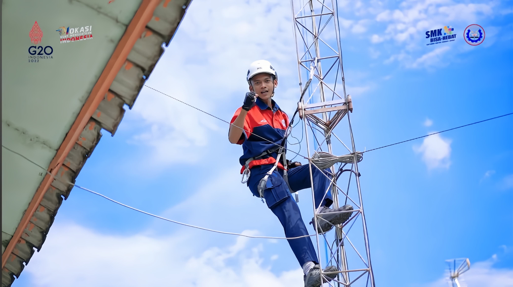
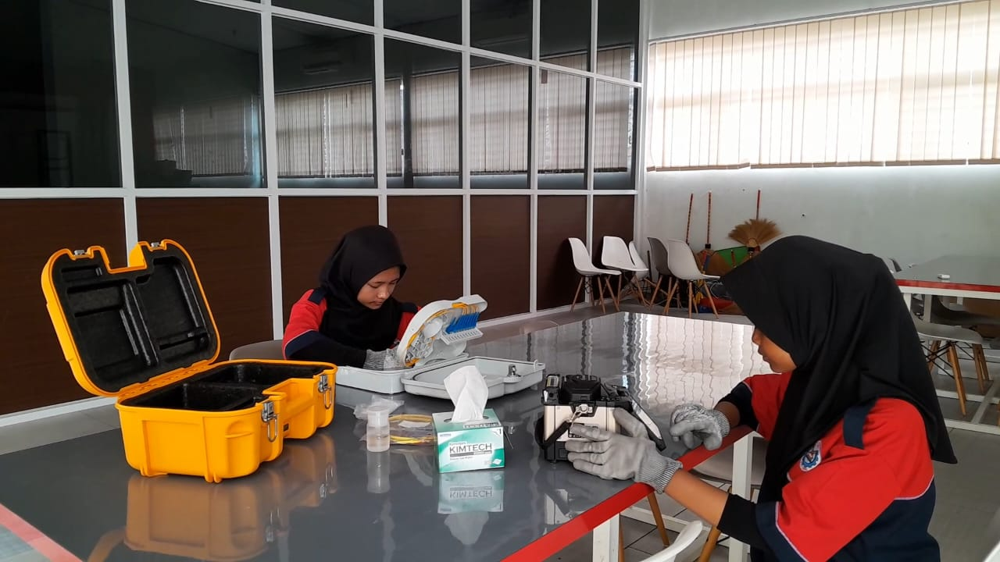

Submitted by admin on Sel, 26/11/2024 - 05:15
Teknik Komputer dan Jaringan (TKJ) dalam Kurikulum 2013 atau Teknik Jaringan Komputer dan telekomunikasi (TJKT) dalam Kurikulum KOS 2021 merupakan kompetensi keahlian yang masuk dalam Bidang Keahlian Teknik Komputer dan Informatika
dan Bidang Keahlian Teknologi Informasi dan Komunikasi. Lama pendidikan kompetensi keahlian TKJ ini adalah selama tiga (3) tahun. Kompetensi Keahlian TKJ menawarkan beberapa pembelajaran dibidang jaringan komputer dan informatika. Sistem pembelajaran yang terpadu dengan fasilitas
sarana dan prasarana yang memadai merupakan komitmen kami agar lulusan TKJ SMKN 1 Adiwerna bisa, terampil, dan profesional dibidangnya.
Dalam pelaksanaan pembelajaran TKJ, siswa dibekali keterampilan dalam menguasai sebagai teknisi komputer, operator jaringan, helpdesk,
system analist, programmer, web & graphic design, Internet of Things (IoT), komputasi awan, dll Untuk meningkatkan profesionalismenya, tenaga pendidik di lingkungan TKJ SMKN 1 Adiwerna telah kompeten dan memiliki sertifikasi keahlian yang diakui secara Nasional. Selain dari hal
tersebut, terdapat empat (4) Asesor Kompetensi yang dalam pelaksanaannya memiliki legal formal untuk mensertifikasi secara independen dan profesional. Beberapa guru juga telah mengikuti kegiatan pemagangan dari PT. ID Networkers sehingga memiliki kompetensi yang diakui Internasional
melalui program Mikrotik Academy. Dengan peningkatan yang berkelanjutan dalam sistem pendidikannya maupun perbaikan dan peningkatan dalam hal fasilitas, jumlah peminat kompetensi keahlian TKJ selalu menunjukkan peningkatan yang teratur setiap tahunnya.
Secara Akademik dan
Kompetensi dibidangnya, siswa di kompetensi keahlian TKJ ini memiliki sejumlah prestasi diantaranya Juara III dan IV Nasional bidang Lomba SMK Inclusive Innovation Challenge tahun 2017, Juara Lomba Kompetensi Siswa (LKS) tingkat Kab. Tegal bidang IT Networking, Web design, dan IT
Software App. Finalis LKS tingkat Prov. Jawa Tengah bidang IT Networking tahun 2017, 2018, dan 2019. Dalam bidang Kerjasama Dunia Usaha dan Dunia Industri (DUDI), jurusan TKJ juga telah memiliki kelas industri Bersama PT. GO-OPTIX Indonesia yang mana semua kurikulumnya didasarkan
atas standar industri khususnya bidang Fiber Optic. Selain itu kompetensi keahlian TKJ ini memiliki sejumlah Kerjasama baik perusahaan lokal dan nasional diantaranya adalah PT. Delameta Bilano, PT. Telkom Indonesia, PT. KAI, UPT. Balai Yasa, PT. Telkomsel, PT. SAS Kreasindo Utama,
PT. Komunika Utama, Citranet, PT. Dinustek, dan perusahaan besar lainnya.

